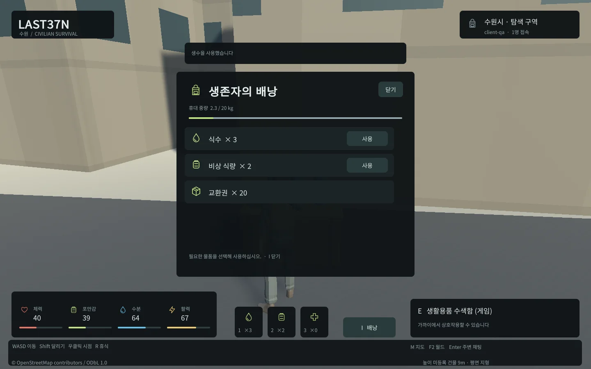
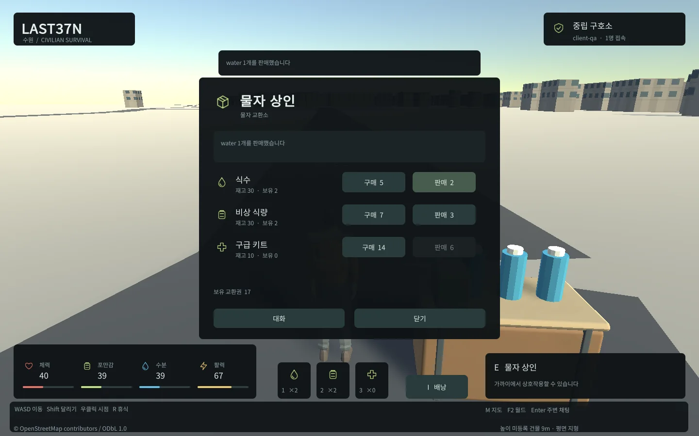

Tracefolio REPORTS & ISSUES
Tracefolio REPORTS & ISSUES웹 초기 전송79% 경량화 · gzip 릴리스와 고DPI 제한
완료실제 초기 전송50.53MB→10.40MB, DPR2 내부 화면2880x1800→1440x900을 확인하고12MiB 예산 검사를 적용했습니다.
작업 결과
웹 초기 전송/고DPI 비용을 낮추고 실제 기능 검증 후 로컬 웹에 반영했습니다. 사용자 화면·마우스·키보드는 제어하지 않았습니다. 장치별 게임 FPS 최적화 완료를 주장하지 않습니다.
변경 내용
적용 내용
Unity6000.0.83f1 Web 빌드를 압축 Disabled/Development에서 gzip/Release로 변경했습니다. 브라우저 네이티브 해제를 위해 gzip 헤더와 wasm MIME을 서버에서 제공합니다. 기존 원본은 .runtime/web-before-performance에 보존했고 별도 출력/포트에서 통과한 파일만 로컬 웹에 반영했습니다.
| 실제 측정 | 이전 | 적용 후 |
|---|---|---|
| 초기4개 파일 전송 | 50,532,559bytes | 10,398,823bytes |
| DPR2 canvas 내부 크기 | 2880×1800 | 1440×900 |
| 렌더링 픽셀 | 5,184,000 | 1,296,000 |
초기 전송79.42%, 해당 고DPI 조건의 픽셀 수75% 감소입니다. FPS 개선률로 바꾸어 주장하지 않습니다. 고DPI 자동 배율을1로 제한했습니다.


HTML이 참조하는 loader/data/framework/wasm4개 합계가12MiB를 넘으면 빌드 후 검사가 실패합니다. 상한은 provisional 설정 tools/web-budget.json입니다. 파츠 확장 시 공유 뼈대/메시/재질과 선택된 장비 표시를 기준으로 하되, 플레이 중 파츠 교체·LOD·메시 배칭이 이미 구현된 것으로 해석하지 않습니다.
검증
DPR2·1440x900 CSS·새 브라우저 컨텍스트·캐시 비활성 조건에서 실제 전송 바이트를 측정했습니다. wasm 응답 Content-Encoding:gzip, Content-Type:application/wasm, 압축 길이7,220,833bytes를 확인했습니다. 최종 실제 localhost8788에서도 전송10,398,823bytes, canvas1440x900, 실제 도시 로딩·엔진 오류0을 확인했습니다.
별도 QA PostGIS에서 실제 수색 뒤 식수4→3 사용, 배낭, 상점 구매/판매, 의무병 체력100 복원을 통과했습니다. TypeScript 검사와12MiB 예산 검사도 통과했습니다. localhost 냉시작은 이전5.45초·최종 로컬5.33초였지만 단일 실행이며 유의한 시간 개선이나 인터넷 다운로드 지연을 증명하지 않습니다.
공식 Unity6000.0 배포 문서에서 릴리스 압축과 헤더 요구사항을 확인했습니다: https://docs.unity.com/en-us/engine/6000.0/manual/platform-specific/webgl/building-distribution/deploying . Web Perf 스킬은 Chrome DevTools MCP 미제공 시 STOP하도록 되어 있어 해당 감사 경로를 중단하고 Unity CLI/독립 헤드리스 검증을 사용했습니다. Lighthouse·Core Web Vitals 측정 완료로 보고하지 않습니다.
보고용 실제 캡처2개를 WebP로 압축하고 바이트/해상도·가독성을 확인합니다. 교훈 검토: 전송/접속 부하와 화면 렌더링 성능을 구분한다는 프로젝트 성능 기준을 docs/WEB_PERFORMANCE.md에 기록했습니다. 기존 전역의 실제 근거/미확인 구분 지침이 적용되므로 전역 규칙 추가·변경 없음입니다.
남은 사항
저사양/모바일 CPU·GPU·메모리와 다수 캐릭터 화면의 FPS는 미확인입니다. 초기 청크의 건물579개·도로454개 개별 렌더러에 대한 배칭/LOD는 아직 적용하지 않았습니다.100명 WebSocket 시험은 이를 대신하지 않습니다. 웹 초기 전송과 고DPI 제한을 넘는 최적화는 별도 측정 게이트로 유지합니다.
작업 시간
- 제안 시간: 10~20분. 시작2026-10-30 21:53:56 KST(Asia/Seoul).
- 실제로 완료된 시간: 구현·실행 검증 결과 기록 2026-10-30 22:08:58 KST. 시작 후 15분 2초. 게시/외부 조회 완료 시각은 최종 전달 기록과 채팅에 별도 표기합니다.
- XERJ: 미사용 — XERJ/Chrome DevTools MCP 미제공. rg·현재 빌드/설정·Unity CLI·실제 헤드리스 브라우저로 검증했습니다.